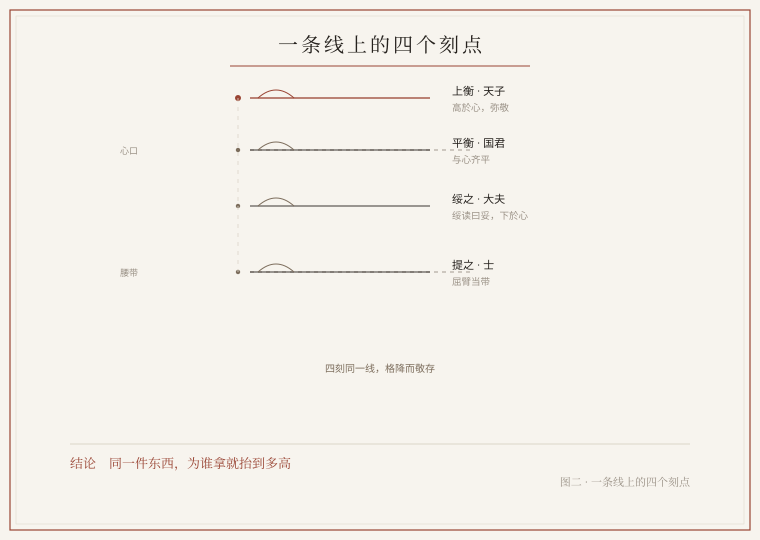

曲礼下 · 二·二 · 第 125 课
承上节「当心」之基准，紧接着给出四级升降：为天子执器高过心，为君执器与心平，为大夫执器低於心，为士执器当带。
说什么事：执天子之器则上衡，国君则平衡，大夫则绥之，士则提之。
落在哪一层：仪。四等高度，一线贯之。
为何编在此位：上节立基准，此节立刻给基准加减。礼的算法在开篇两节之内就完整摆出：先有常，再有降杀。
【经】執天子之器則上衡，國君則平衡，大夫則綏之，士則提之。
【注】謂高於心，彌敬也。此衡謂與心平。綏讀曰妥，妥之，謂下於心。
【疏】「执天」至「提之」……执，持也。上犹高也。衡，平也。平谓人之拱手正当心平，故谓心为衡。天子至尊，器不宜下，故臣为擎奉皆高於心，弥敬也。……「大夫则绥之」者，绥，下也。又降於诸侯，故其臣为奉器下於心也。「士则提之」者，上云大夫绥之，已下於心，今为士提之，又在绥之下，即上「提者当带」。
衡 注「此衡谓与心平」。疏「平谓人之拱手正当心平，故谓心为衡」。衡非秤，是胸前那条水平线。
上衡 高於心。注「弥敬也」：越是至尊之器，越不许下垂。
平衡 与心齐平，即上节「当心」。
绥之 注「绥读曰妥，妥之，谓下於心」。此字不可读本音，是假借。
提之 屈臂当带，即上节之「提者当带」。两节由此扣合。
衡有二处 疏「若大夫衡视，则面为衡；此为天子执器，则上衡，谓高心也」。故郑特注「此衡谓与心平」，防混。
为天子捧持器物，要高过心口；为国君捧持，与心口齐平；为大夫捧持，略低于心口；为士捧持，手垂到腰带。
同一件东西，为谁拿，决定手抬到多高。四等不是四套礼，是一条线上的四个刻点：上衡、平衡、绥之、提之。高低之差，就是尊卑之差。
第一层 衡是一条可共享的线 四等人共用一个身体坐标——心口。所以敬可以比较，可以排序，不必靠语言声明。
第二层 天子特高 注「器不宜下」。「不宜」二字最要紧：不是不敢，是不宜。礼的强制力常以「不宜」的面目出现。
第三层 降杀以次 天子高、君平、大夫下、士当带。四等之间并无跳跃，是一格一格降下来的。
第四层 与上节合为一节读 「士则提之」正接「提者当带」。若分作两节各自读，则「提者当带」成了孤立的技术，「士则提之」成了孤立的等级；合读才见其为一套刻度。
与今日何干 同一份文件递给不同层级的人，起身与否、双手与否、目光何处，仍是一套刻度。刻度在，人才知道自己在哪儿。
| 左 | 右 |
|---|---|
| 执天子之器则上衡 | 高於心，弥敬 |
| 国君则平衡 | 与心齐 |
| 大夫则绥之 | 绥读曰妥，下於心 |
| 士则提之 | 屈臂当带，即上节之提 |
| 衡谓与心平 | 非秤，非横木 |
| 大夫衡视则面为衡 | 同一衡字，二义 |
画四条平行的水平短线，自上而下依次排列，线端各画一双仰承的手（只画手与腕，不画人）：最上一条线的手最高；第二条与一条贯穿画面中部的心口线齐平；第三条略低于心口线；最下一条与画面下部的腰带线齐平。四条线之间以一条极淡的竖虚线相连，示意为同一刻度上的四点。心口线与腰带线各只画左端一小段，不贯穿全幅。不写文字。赭色只用在最上面那条线与它的那双手上。
